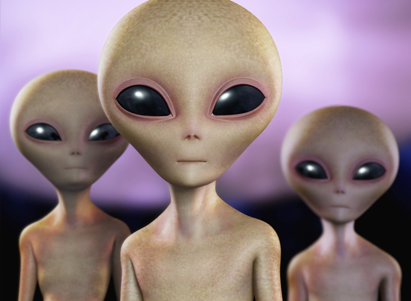

I was born and raised in Pensacola, Florida, at Sacret Heart Hospital. I grew up with it being my mom and my three sisters and my brother, in total I have 6 siblings. They are all older than me by 20-16 years. Im the baby of course! I grew up with music and art, I always knew I wanted to be involved with the arts. I began looking into digital art when I was in middle school and later became interested in photography. Im hoping I can incorperate both in a career one day.
